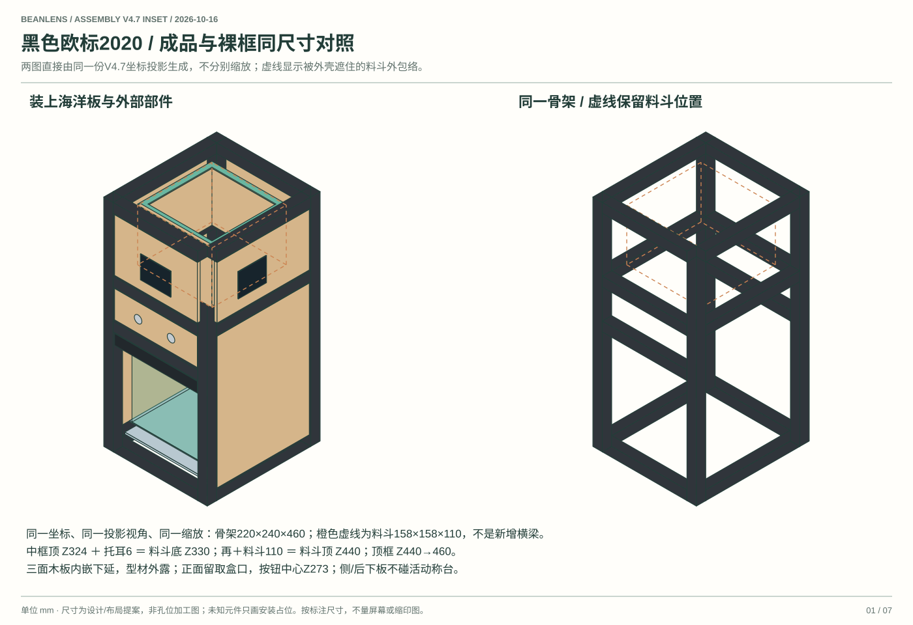
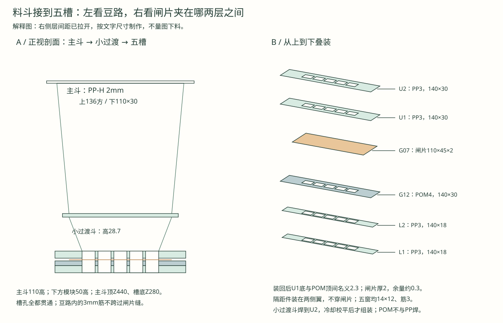
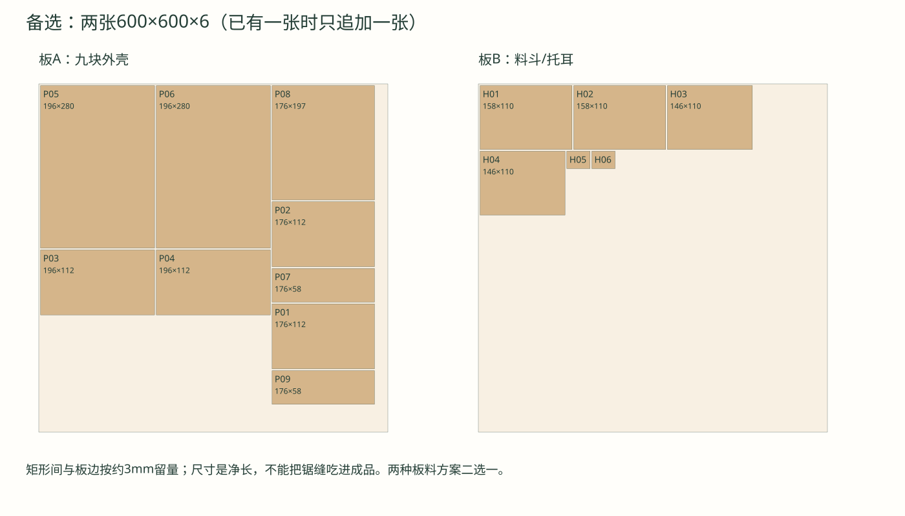

F04料斗、五槽与内嵌木面板：手工制作指南
2026-10-16，V4.7。按用户已有可控温热风焊枪编写。当前为首样制作方案，未实物焊接、带豆或承重验收。
图文操作页 · 6页A4原尺寸控制模板 · PP裁片CSV · 完整组装图 · 更新采购表。
模板的黑线是内表面控制尺寸，不是不考虑2mm板厚就能直接焊合的最终外廓；外侧留约1mm修边量，先试夹、再修坡口。打印选择100%/实际大小，关闭“适合页面”；每页先量100mm校验线。斜高不能用垂直高度代替。
先认识这三个部件
- 木支架H01–H06：仍是垂直四壁＋两托耳，负责支承和定位，木板不直接接触豆。为给2mm PP与外焊筋留量，木壳由154方改为外158×158×110、内146×146；前后158×110、左右146×110，均厚6。托耳仍40×30×6。
- F04主PP料斗：四片斜面合成，上口内尺寸136×136、下口110×30、垂直高110。本次由0.5mm薄衬改为2mm自然色PP-H，便于试焊；不能照旧0.5mm表采购。缩小顶口是为了给板厚、焊筋和木框间隙留量。上端另焊一个158方、内孔136方的2mm平口圈，坐在木壁顶上，不再硬折6mm窄翻边。
- F05/G12五槽模块：不是把四片50mm高隔板直接粘到主斗口下。先经一个110×30→82×12的小过渡段，再进入五窗叠片。5×14＋4×3＝82mm，四条3mm筋就是槽间隔板。所有层的窗口上下重合，不能在出口下留实心板。
高度保持：中框顶324＋托耳6＝木壳底330，主斗到440；平口圈顶442，仍低于460骨架顶。五槽模块整体Z280→330，闸片底290、顶292，挡豆仍在模块内。
材料和工具
- F04：食品接触用途资料可核的自然色PP-H，2mm A3板两张，包含试焊余料；不要用发泡板、混料文件夹或只凭回收标志认材质。已有0.5mm可留作纸样替代片，不用于本次热焊硬斗。
- F05：同供应商可焊PP-H 3mm、300×300一张，做上下五窗叠片和接合环；小过渡段从F04的2mm板余料裁。POM支承另买140×30×4，不把POM与PP热焊。
- F12：同牌号/可焊性匹配的自然色PP焊条，Ø2mm约5m供小焊缝，Ø3mm约2m先在3mm板练习；板与焊条由卖家配套。4只口圈压片用20×10×约1.5角铝、切长15，M3穿木壁固定；压片只压口圈外缘，不伸进136方开口。
- 钢尺、直角尺、卡尺、细头记号笔、硬纸板、切割垫、夹具；细齿手锯/小曲线锯、锉刀、刮刀。2/3mm PP不要试图用美工刀一刀压断；若刻切，应固定钢尺、轻划多次并保护手的位置。
- 塑焊用细圆嘴约4–5mm，与焊枪接口匹配；仅有宽口大流量枪时先做试片，不能认为装了小嘴就必然有合适的风量/静压。按焊枪说明书用喷嘴，别自行堵风口。
- 无金属污染的刮刀、接触测温探头（能核热气温度更好）、护目镜和通风条件。热风、焊条与试片远离木板和豆料；不以冒烟作为“焊透”。
料斗剖面与五槽分层图可对照以下制作步骤；图中叠片间距为演示拉开，实际尺寸按表。

一、纸样和四块主斗裁片
| 裁片 | 数量 | 上边 | 下边 | 两平行边间的斜高 | 材料 |
|---|---|---|---|---|---|
| A：前/后面 | 2 | 136 | 110 | 122.10 | PP-H 2mm |
| B：左/右面 | 2 | 136 | 30 | 110.77 | PP-H 2mm |
公式：A斜高＝√(110²＋53²)；B斜高＝√(110²＋13²)。A下边相对上边每侧缩13，B每侧缩53；四条相邻斜接边都约122.79mm，可相互对齐。
- 在纸上画A：上136，向下122.10画一条平行线；居中画下110，左右缩13，连成等腰梯形。画两片并标A1/A2。
- 画B：上136，向下110.77；居中画下30，左右缩53，连成梯形。画B1/B2。不要把两种片都画成140口的同一梯形。
- 用纸胶带在外侧暂接A1→B1→A2→B2→A1，形成空斗；胶带只用于纸样和冷试夹，不进入最后豆路，也不当永久接头。
- 同时做上下定位框：上方136方开口，下面110×30开口，二者中心对齐、垂直间距110。用四块纸片试合；不是将四片顶边摊在一个平面后猜角度。
- 把纸斗放入158方木壳纸样，检查口圈能坐稳、底口居中、四壁不顶木壁。确认后转到PP；板上先标内/外、上/下，黑线外留约1mm供修边。
- 切下后夹住两相邻片，内表面边线相接，修掉外侧妨碍贴合的棱。不要一律切45°：斜斗相邻面并非标准90°。用边角料试夹确定坡口；模板控制线应仍保留在内侧。
二、先练焊，再焊主斗
PP不适合把普通热熔胶或瞬干胶当默认永久接头。3M将其列为低表面能、较难胶接的塑料；本方案采用同材热焊，不在豆路试不明胶水。3M原厂说明。
先做两种废料样件：3mm板＋Ø3焊条的平接/角接，随后用实际2mm板＋Ø2焊条练同样接头。第一块不合格不要直接焊正式四片。
- 刮去接缝表面的污层和氧化表层，清洁、干燥，焊条同样处理；不靠油污、粉末或表面保护膜焊合。
- 将板固定，让枪口同时加热两片接边与焊条前端；推动的是已经软化的焊条，不能把一根熔化的条铺在仍然坚硬的冷板上。
- 工业PP热气焊常见工艺参考约300–340°C，但测量位置、风量、焊法和焊条直径各有限定；自由摆焊与快速拖焊的速度也不同。这不是给任意热风枪设330°C即可成功的配方。先核板/焊条建议，用接近厂家低端的设置在废料调试，记录喷嘴、风档、距离和速度。若焊枪不能稳定小风量/局部加热，不用正式斗硬试。Röchling原厂参数与条件、Leister塑焊应用说明。
- 母材、焊条应一起软化，条能与接边融合；泡、焦点、明显塌边或烟说明热输入失控，应停下，冷却后重新调试。焊条冷却后能整根剥起，多半是未熔合，不能靠再涂一层掩盖。
- 让试片自然冷却，再做手弯和剥离检查；观察接缝是否直接脱开、是否明显削弱母材。手工检查不是认证，只决定是否值得继续做首样。
正式斗用定位框夹住：四角先各点焊上下端，再按对角、短段交替补焊，别一口气焊完一条长缝把斗拉歪。先外缝，冷却后看内侧；补平漏缝，刮去尖凸和挂豆台阶，但不要把焊肉全部削掉。焊完再次量136顶口、110×30底口、110垂直高和两条顶口对角线，变形时先返工，不用木框硬挤。
三、口圈、底环和木支架怎样拼
- 上口圈：PP2，外158×158、内孔136×136；料斗四片上端从圈下方对齐孔边，先点焊四角再短段对称焊。圈坐在木壳顶Z440，圈顶442。
- 木壳：前后158×110×6，左右146×110×6；前后包住侧板，外158、内146。角片和螺钉在木壳外侧，内侧螺钉头齐平，不让尖端碰PP。木壳没有实心底板。
- 4只20×10角铝压片：长腿在木壁外、短腿压上口圈外缘；侧面用M3×12穿木壁固定。先按实物位置预钻，内侧沉头齐平；短腿不得伸进136开口。不靠木板端面里拧自攻钉夹口圈。
- 下接环：PP3，外124×44、内孔110×30，Z327→330。主斗下口与环上孔边对接，在环外侧焊；过渡斗上口接环下方。焊筋朝豆路外，不能堵内孔。接环和模块需能从木壳拆出清洁；固定孔按首样量，暂不焊死到机架。
四、110×30怎样过渡到五个14×12槽
如果直接把110宽口扣在82宽槽列上，两侧就可能形成积豆台阶。因此加一个垂直高28.7mm的小过渡斗：上110×30、下82×12，中心对齐；其上方还有3mm接环，所以327＋3＝330。
| 小过渡斗裁片 | 数量 | 上边 | 下边 | 斜高 |
|---|---|---|---|---|
| C：前后 | 2 | 110 | 82 | √(28.7²＋9²) ≈30.08 |
| D：左右 | 2 | 30 | 12 | √(28.7²＋14²) ≈31.93 |
同样先纸样、留修边量、外侧点焊。其上端Z327，下端Z298.3。木壳与主斗110mm高度不靠这个小斗改变。小斗下口先与U2上面的五窗包络对齐，单独夹持点焊/短焊，完全冷却后复核U2平整度与窗口，再装入叠片；不要在已装好的闸片旁焊接。
五槽不采用整片50mm隔板横穿闸片，而是上下叠片，中间留闸片缝：
| 自下向上 | 材料/外形 | Z范围 | 作用 |
|---|---|---|---|
| L1、L2 | PP3，140×18，各一片 | 280–283、283–286 | 闸片下方五槽围挡 |
| S | POM4，140×30，一片 | 286–290 | 五窗支承滑动面；不与PP焊 |
| 闸片通道 | 2mm铝片＋约0.3总余量 | 290–292.3 | 只在此处让闸片前后移动 |
| U1、U2 | PP3，140×30，各一片 | 292.3–295.3、295.3–298.3 | 上方五窗；后罩另按扫掠包络制作 |
| 小过渡斗 | PP2四斜片 | 298.3–327 | 110×30渐缩至82×12 |
| 接环 | PP3，124×44 | 327–330 | 接主斗下口 |
五窗坐标（各片左前角作原点）：X依次为29–43、46–60、63–77、80–94、97–111。宽均14，间距筋均3。140−82＝58，左右各29；其中闸片宽110位于X15→125，其外侧留15mm装隔距件。上片与POM的孔Y9→21；下片孔Y3→15，使装到整机后全部落在同一Y114→126。
打印第5/6页模板后，先做一片并用卡尺核14和12。3mm板可钻引孔、细锯去中间、锉到控制线；更推荐把SVG/尺寸交CNC店一次开同批窗口。五片叠在一起用两枚定位杆对齐，内壁若有错台先修齐，不靠拧紧把错位藏起来。先单槽少量豆验证，再制作完整五槽。
五、闸片间隙和固定：不要把滑闸夹死
- 闸片仍110×45×2，行程15；在140mm叠片宽度内占X15→125。关闭前缘Y112.5，打开Y127.5；豆路Y114→126，关闭覆盖/打开退让各1.5。
- 两侧隔距件放X0→10、130→140，不能放入X15→125的闸片扫掠区。厚度按闸片实测厚＋约0.3mm总余量起试：名义2mm片可用2mm隔片＋0.3mm薄片；不是拧紧螺钉来调摩擦。
- 前方两枚M3夹紧螺栓位置可取X7.5/132.5、整机Y120。下部另用3mm支承到槽底280；后罩须跨过G09加强梁的高度，不能把五窗平板延长到传动区。M3×35是贯穿本叠高的候选，按实际垫片、有效啮合复核。
- 槽下豆路和五窗不得被基座、垫圈或螺柱堵住；螺钉不穿过滑闸。所有内部边去毛刺，不做刀刃。
- 后上罩不是完整封闭退片袋的验收：后方仍有10mm加强角梁、滑架、导轨和润滑区；G13/G20须按实际全行程做可拆后/侧防护与缝口清理结构。不能直接加一片平底板去撞滑块。未完成这项纸样前，不做带豆电动测试。
- 不接舵机，手推15mm，确认所有窗同时露出/关闭；局部卡滞先找平整度、错台、焊接变形与隔距，不让MG996R强拉。热焊只做主斗、过渡斗等固定豆路，不在已经装好的滑动夹缝边热焊。
六、三面延伸、框架外露的木板
上一版把下部三面也打开、用外覆板遮住柱面，与用户外观目标不符。本版采用左/右/后三面延伸到基座，板块内嵌；正面保留取盒口。木板不互相拼成外角，外角由黑色2020柱构成，所以不会出现两片6mm木板对接的凹角。
中横梁移到前后柱面，仍用原180梁，不增加型材。为让腰线外露，板块按真实横梁分开，不能整片塞进型材平面里与横梁相撞。
| 板 | 净尺寸mm | 数量 | 高度位置 |
|---|---|---|---|
| 前上/后上 | 176×112×6 | 各1 | 326→438 |
| 左上/右上 | 196×112×6 | 各1 | 326→438 |
| 左下/右下 | 196×280×6 | 各1 | 22→302 |
| 后下 | 176×197×6 | 1 | 22→219 |
| 前中/后中 | 176×58×6 | 各1 | 244→302 |
176＝180开口−左右各2mm；196＝200开口−各2mm。板面相对框外面内凹约1mm，切面与板边先封边，留黑色细缝，不让板边顶死型材。后方相机梁Z221.25→241.25也外露，后板因此分三段。前下相机梁下的细遮光条用黑PP，不用22mm窄木条勉强承力。
安装用F11：20×20×2内角片在立柱槽内侧固定，另一脚托住板背；配约11mmM3隔距（10mm柱＋1mm垫片）使6mm板面内凹约1mm。11mm是示意堆叠，按收到角片的板面位置实量调整。 板上用黑色M3×25沉头螺钉，先预钻再浅沉孔；别把6mm板沉穿。长板各4个支点，两块58mm短板各2个，共32点；另2点给前遮光条，购40套含备用。先做一个板角样件，确认面齐、边缝与锁紧方式，再复制全部孔。
前按钮中心下移到Z273，避开304→324腰梁。后电控托板改在下部后方，盒向前移5mm；留盒与固定板至少约7mm间隙，模块厚度目标≤21mm，实际超出时先重排，不能挤碰称台/盒子。称重活动件不得借外壳承重。
海洋板主排版改为800×600×6一张；若已买600方，则用两张600×600替代，不重复购买800板。主图给出保守可切排版，新增9块外面板＋6块料斗/托耳。型材补料仍是黑色欧标180mm四根。
最后验收清单
纸样高度和口径正确 → 废料焊缝练习 → 主斗冷却复量 → 水/光检查明显漏缝（不代替强度检查）→ 单槽少量豆 → 空载手推闸片 → 做完后防护和限位 → 才逐步电动测试。记录挂豆位置、焊缝开裂、粉屑、卡滞和清洁拆装情况。内部补焊后要清理所有刮屑。
主斗理想几何容积约1.15L；焊筋、顶部留空等还会减少可用容积。1kg是载荷目标，不等于本尺寸能一次装下1kg豆，必须用实际豆试装并称量。
原厂来源与适用边界
- SIMONA焊接工艺说明：同类聚合物还需匹配可焊性/熔体性质，颜色或“PP”字样不是全部条件。
- Röchling热气焊参数：不同焊法、温度测量位置、风量、速度和焊条直径有明确条件；本文没有把工业大板参数宣称为本小斗已验证工艺。
- Leister塑焊应用、3M低表面能材料：用于材料/连接方法依据；食品接触适用性由实际板材、焊条和清洁工艺另核。
料斗剖面与五槽分层图

已买600方板时的替代排版
